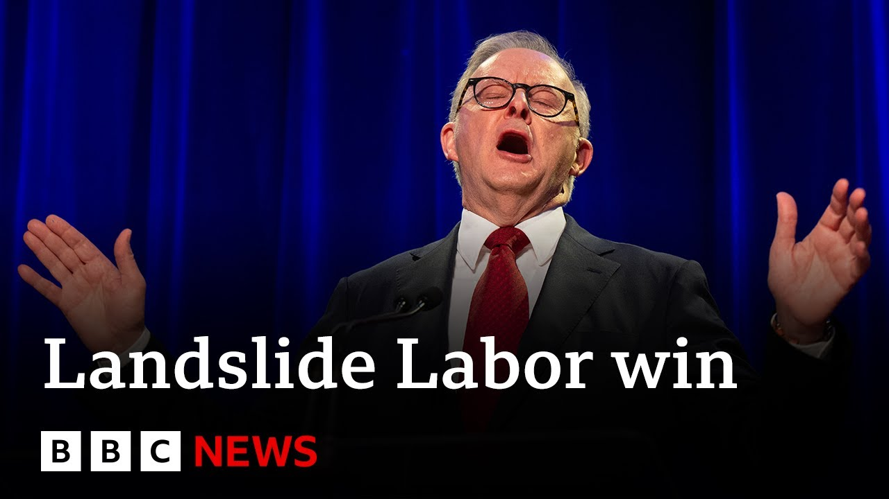

来B站一起耍【Global每日英语简报】
【澳大利亚总理阿尔巴尼斯以压倒性优势赢得连任 | BBC新闻】
Summary: Australia's Prime Minister Anthony Albanese has won re-election, defeating opponent Peter Dutton and becoming the first PM in 21 years to secure consecutive victories. He pledges renewable energy and healthcare reforms, while the Conservatives face a major setback.
摘要： 澳大利亚总理安东尼·阿尔巴尼斯赢得连任，击败对手彼得·达顿，成为21年来首位连续获胜的总理。他承诺推动可再生能源和医疗改革，而保守党则遭遇重大挫折。

⏱️ Estimated Reading Time: 6 min
Now, let's go back to Australia because Anthony Albanes, the country's prime minister, has won re-election.
现在，让我们回到澳大利亚，因为该国总理安东尼·阿尔巴尼斯赢得了连任。
His opponent, Peter Dutton, conceded defeat in the vote, which has been overshadowed by Donald Trump's policy on tariffs.
他的对手彼得·达顿在投票中承认失败，而这次选举被唐纳德·特朗普的关税政策所掩盖。
While the results make Anthony Albanes the first prime minister in 21 years to secure two consecutive victories.
这一结果使安东尼·阿尔巴尼斯成为21年来首位连续两次获胜的总理。
He's promised to embrace renewable energy and to improve Australia's healthcare system.
他承诺拥抱可再生能源并改善澳大利亚的医疗体系。
Well, my colleague Georgia Terry is monitoring all of this for us.
我的同事乔治亚·特里正在为我们监控这一切。
So, just talk us through how expected was this result?
那么，请告诉我们这个结果在多大程度上是预料之中的？
I mean, slightly expected, but not by this massive margin.
我的意思是，稍微预料到了，但没想到会有这么大的优势。
No, the results are actually really interesting coming out of Australia.
不，从澳大利亚传出的结果实际上非常有趣。
You know, going into election day, the polls had Labour winning, but I don't think that people thought it would be by this much.
你知道，在选举日之前，民调显示工党会赢，但我不认为人们会想到优势这么大。
Now, just to give you a little bit of a snapshot of this, the ABC, which is our broadcasting partner in Australia, has a predicted 85 seats to the Labour Party.
现在，简单介绍一下情况，我们在澳大利亚的广播合作伙伴ABC预测工党将获得85个席位。
Now, to get a majority government, that has to be about 76 seats.
要组成多数政府，需要大约76个席位。
So they've well and truly reached that.
所以他们已经远远超过了这个数字。
But not only that, we had Peter Dutton not just losing this election, but he also lost his seat, which would be a major blow for the Conservatives, particularly because going into this, they were leading in the polls at the start of this campaign.
不仅如此，彼得·达顿不仅输掉了这次选举，还丢掉了自己的席位，这对保守党来说是一个重大打击，尤其是在竞选初期他们在民调中领先的情况下。
And I think what wasn't necessarily expected was this kind of Trump factor, the looming spectre of Trump in the background.
我认为不一定预料到的是这种特朗普因素，特朗普的阴影在背后若隐若现。
And we saw Peter Dutton really campaigning on this like Trumplike platform where it kind of worked for him initially but then as there was more uncertainty in Trump's 100 days tariffs started coming through Australian voters were really questioning do we want this and at the same time we had this flip side where Anthony Albanes was really gaining momentum and he was announcing policies that were really really really attractive to that key votership that they needed.
我们看到彼得·达顿以类似特朗普的平台竞选，起初对他有些效果，但随着特朗普百日关税政策的不确定性增加，澳大利亚选民开始质疑我们是否想要这个，与此同时，安东尼·阿尔巴尼斯势头正猛，他宣布的政策对他们需要的关键选民群体非常有吸引力。
So he's now got to fulfill on those policies.
所以他现在必须兑现这些政策。
What happens next?
接下来会发生什么？
So basically exactly what you said, they really need to fulfill these promises that they said with these cost of living policies that they came up with which were really popular with the Australian public.
基本上就像你说的，他们真的需要兑现这些承诺，他们提出的生活成本政策非常受澳大利亚公众欢迎。
But I think when it comes to the Conservatives, they're in rebuild mode.
但我认为对保守党来说，他们正处于重建模式。
They really have to look at where they are sitting now.
他们真的需要审视自己目前的处境。
They need a new leader.
他们需要一个新的领导人。
They need a new strategy.
他们需要一个新的策略。
Where will they go with this?
他们将何去何从？
Another factor that we're looking at with the two parties, both of them facing this problem, is that about onethird of Australians voted for an independent or a smaller party.
我们观察到的另一个因素是，两党都面临这个问题，大约三分之一的澳大利亚人投票给了独立政党或小党。
So they'll be looking at that going, why did we lose those voters, that onethird of Australians who don't engage with the two major political parties?
所以他们会看着这个结果问，为什么我们失去了那些选民，那三分之一不与两大政党接触的澳大利亚人？
And I think what they'll be doing there is analyzing how they can bring those voters back.
我认为他们会分析如何赢回这些选民。
And so how does it now feed into the fact that this is the first time, and this is absolutely fascinating, the first time that the Gen Z and the millennial voters outnumbered the baby boomers.
那么，这如何与一个事实联系起来，这是第一次，而且绝对令人着迷，Z世代和千禧一代选民的数量超过了婴儿潮一代。
What do we read into that?
我们如何解读这一点？
This was such an interesting campaign because we had both these two major political parties, these two leaders really looking at the youth vote.
这是一次非常有趣的竞选，因为这两大政党和两位领导人都在关注年轻选民的选票。
We had the Conservatives putting out diss tracks against Labor.
我们看到保守党发布针对工党的diss曲目。
We had Anthony Albanzy appearing on all these podcasts really trying to target the youth vote and the youth voice and I think that that really cut through when it came to Labor.
我们看到安东尼·阿尔巴尼斯出现在所有这些播客上，试图争取年轻选票和年轻声音，我认为这对工党来说确实有效。
But what needs to happen now is that Anthony Albanesei really needs to continue that and kind of galvanize that force of young voters if he wants to remain as as a popular prime minister.
但现在需要的是，安东尼·阿尔巴尼斯如果真的想继续成为受欢迎的总理，就需要继续这样做并激励年轻选民的力量。
Absolutely fascinating, isn't it?
绝对令人着迷，不是吗？
Uh Georgia Terry, thank you so much for bringing all of that uh to us and talking us through it.
呃，乔治亚·特里，非常感谢你为我们带来这一切并为我们讲解。